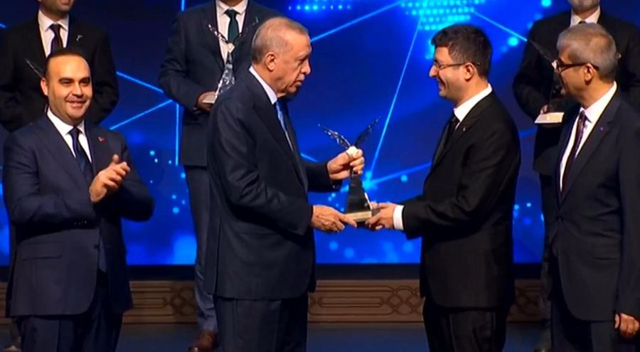
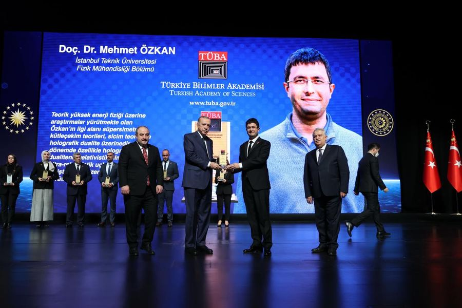
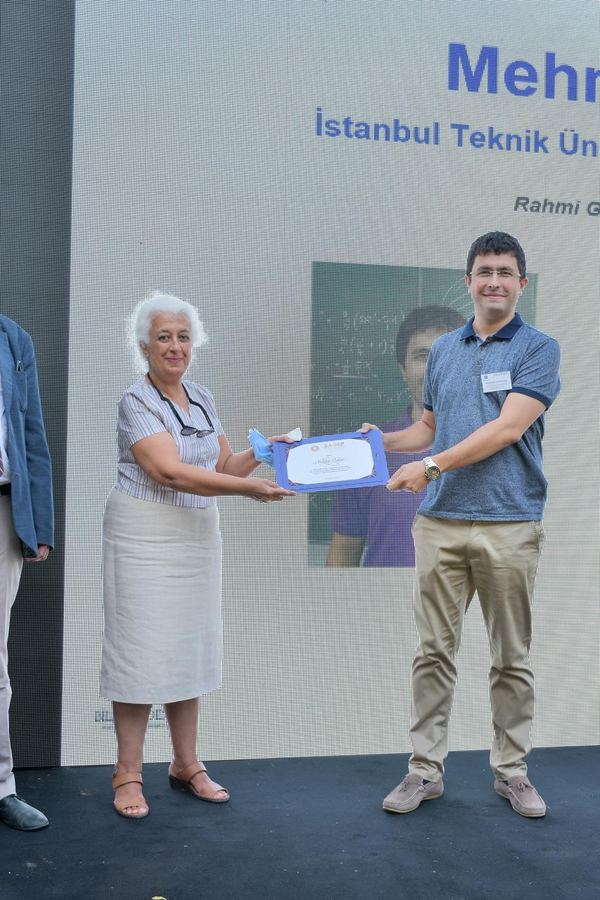

Current project, 2026–2029
A Supersymmetric Perspective to Flat Space Holography
TÜBİTAK Research Projects Funding Program
Holographically viable dual field theories for Carrollian holography, studied from a supersymmetric viewpoint.
Research funding and recognition
TÜBİTAK Research Projects Funding Program
Holographically viable dual field theories for Carrollian holography, studied from a supersymmetric viewpoint.
TÜBİTAK Research Projects Funding Program
An off-shell formalism for non-relativistic supergravity models in various dimensions.
ITU Research Projects Funding Program
The off-shell supersymmetric structure of three-dimensional non-relativistic gravity theories.
TÜBİTAK Research Projects Funding Program
How supergravity theories with eight real supercharges in six, five and four dimensions are related to each other.
TÜBİTAK Research Projects Funding Program, with Emre Onur Kahya
Why many seemingly unrelated inflationary models give rise to the same inflationary observables.
Marie Curie COFUND, European Commission and TÜBİTAK
The Scientific and Technological Research Council of Türkiye (TÜBİTAK)
For internationally outstanding research on three-dimensional (super)gravity theories and their non-relativistic limits.

Turkish Academy of Sciences (TÜBA)
Recognizes and supports promising young scientists conducting internationally competitive research in Türkiye.

Science Academy, Türkiye
Recognizes promising young academics and supports the development of their independent research programmes.
